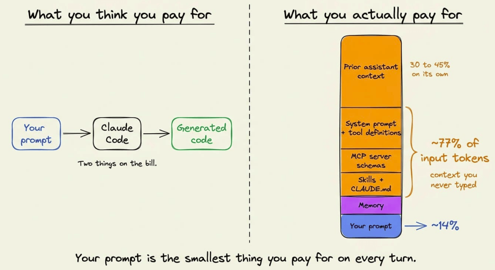
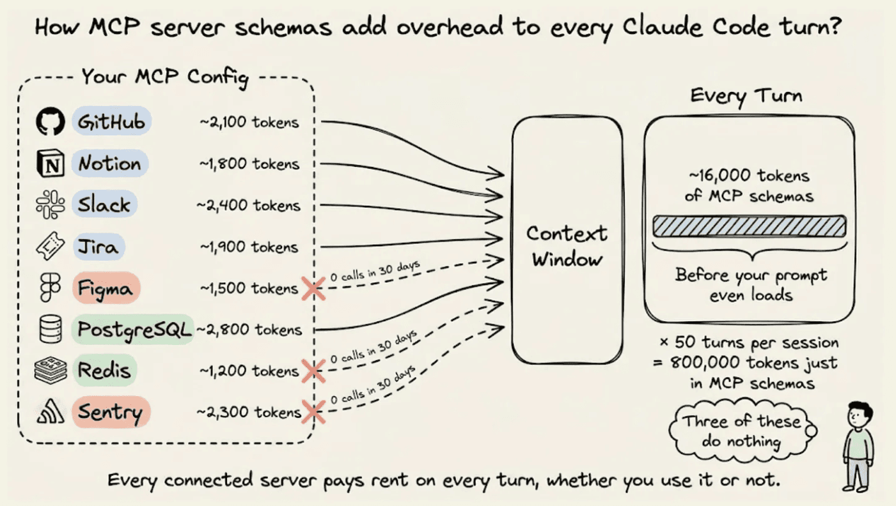
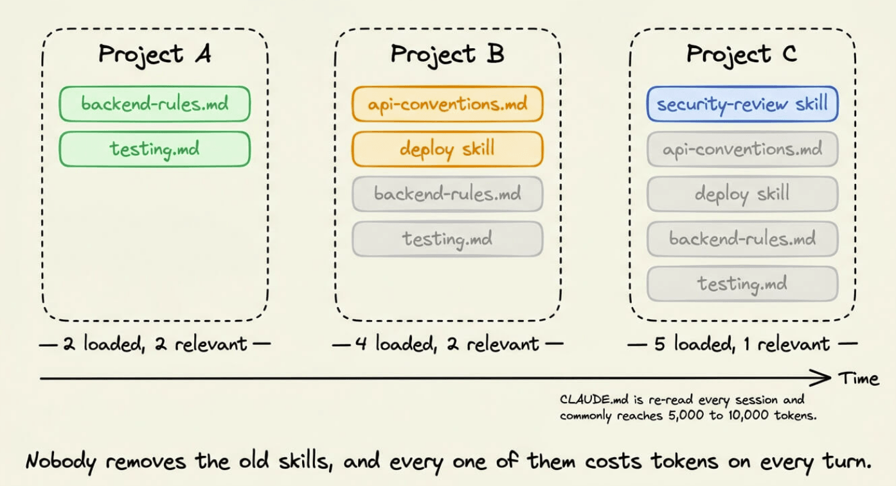
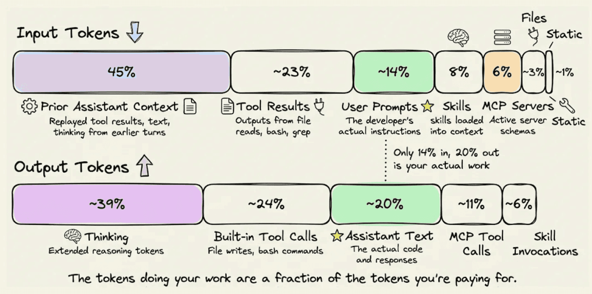
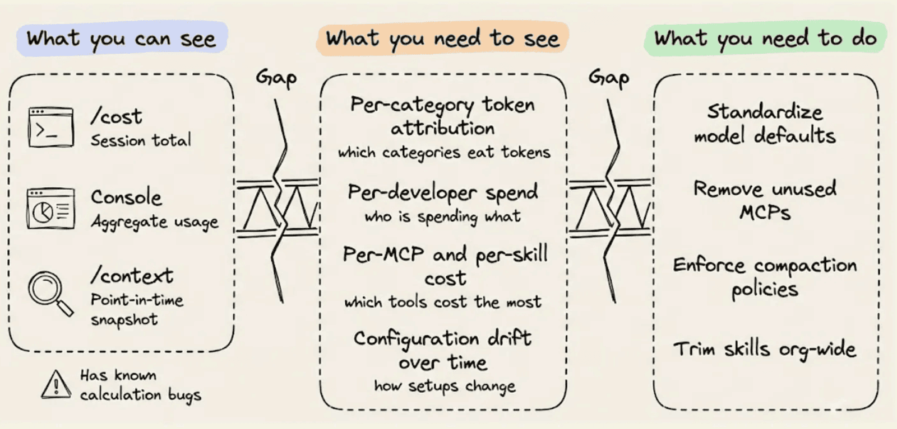

מודעות טכנולוגית · AI
כלכלת טוקנים: מה באמת נשלח לקלוד בכל בקשה
רוב הטוקנים שאתם משלמים עליהם לא מגיעים מהפרומפטים שלכם — ומה אפשר לעשות עם זה
פרק 01
אז לאן באמת הולכים הטוקנים?
רוב העלות מגיעה מקונטקסט שנבנה אוטומטית — ומצטברת בכל פניה 💡
נתונים אמיתיים
כמה מהטוקנים הם הפרומפטים שלכם?
ניתוח של deployment אמיתי של Claude Code חשף את הפיצול הבא
14%
בלבד מגיע
מהפרומפטים שלכם
מהפרומפטים שלכם
פרומפטים של המשתמש
קונטקסט קודם של assistant
תוצאות כלים (tool results)
Static overhead — סכמות, הוראות

86% מה-input tokens הם קונטקסט שלא שלחתם במודע — הוא נבנה אוטומטית בכל בקשה
איך קלוד עובד
כל פניה היא API request חדש לגמרי
המודל לא שומר state (אין זיכרון בין פניות — כל פניה מתחילה מאפס) — הכל נשלח מחדש בכל הודעה
היסטוריית השיחה המלאה נשלחת מחדש בכל הודעה
סכמות כל הכלים (tools ו-MCPs) מתווספות בתחילת כל בקשה
Prompt caching מוזיל את מחיר-לטוקן — אבל לא מפחית את נפח הטוקנים עצמו
קונטקסט מנופח ממשיך לעלות כסף בכל פניה — רק בתעריף מוזל
Caching מוריד את מחיר הטוקן — לא את כמות הטוקנים
פרק 02
מה בונה את ה-Context Stack?
הרכיבים שמצטברים בשקט בכל בקשה
רכיב 1
Static Overhead וסכמות MCP
עלויות קבועות שמשלמים עליהן בכל פניה — ללא קשר למשימה

System Prompt + הוראות
עלות בסיס שלא ניתן להגדיר
טוען בכל פניה ללא יוצא מהכלל
גדל עם כל כלי ו-MCP שמחברים
סכמות MCP
10 שרתים × 5 כלים = בעיה
50 כלים = עד 16,000 טוקן לכל פניה
כל MCP שמחברים נשאר עד שמסירים ידנית
רוב המפתחים לא מסירים אף פעם
MCP שלא השתמשתם בו שבועיים עדיין מוסיף אלפי טוקנים בכל בקשה
רכיב 2
CLAUDE.md וסקילים
קבצי ידע שנטענים לקונטקסט — ונערמים עם הזמן

CLAUDE.md נקרא בתחילת כל session — כל מילה עולה טוקנים בכל הודעה
קבצים גדולים מגיעים ל-5,000–10,000 טוקן — מפתחים מוסיפים תוכן לאורך הסשן, וככל שהסשן מתמשך — זה צורך יותר ויותר טוקנים
סקיל שעזר בפרויקט אחד ממשיך להיטען גם בפרויקט הבא
הבדל של ×10 בעלות: מיקום CLAUDE.md קובע הכל
📁 project/
├── 📄 CLAUDE.md ← נטען בכל session (יקר)
└── 📁 .claude/
└── 📁 rules/
└── 📄 CLAUDE.md ← נטען רק כשנדרש (×10 חיסכון)
CLAUDE.md שגדל בלי שים לב הוא אחד מבזבזי הטוקנים הנפוצים ביותר
רכיב 3
קונטקסט קודם ותוצאות כלים
היסטוריית ה-session שמשוחזרת מחדש בכל פניה — ומצטברת
קונטקסט קודם של assistant
30–45% מסך ה-input tokens
78% ממנו = תוצאות כלים ישנות (קריאות קבצים, bash, grep)
לא הטקסט של השיחה — אלא הפלטים שהכלים הפיקו
מצטבר ומכביד ביתר שאת ב-sessions ארוכים
תוצאות כלים (input)
23%
מסך ה-input
קריאות כלים (output)
24%
מסך ה-output

כל קריאת קובץ או bash שהרצתם — משוחזרת בכל פניה שאחריה
רכיב 4
טוקני חשיבה ובחירת מודל
שני המכפילים השקטים ביותר בחשבון הטוקנים
Thinking tokens
עד 40% מה-output בגדול
High thinking — מהיר לאכול את כל המגבלה
Medium thinking: 76% פחות output tokens — אותה הצלחת משימות
גם משוחזר בקונטקסט ה-assistant — מכביד בכל turn שאחריו
בחירת מודל
המכפיל השקט
Opus יקר — Sonnet עולה רק 60% ממנו עם ביצועים דומים על רוב המשימות
שימוש ב-Opus כ-default לפורמט, linting וקוד שגרתי — אחת הבחירות היקרות ביותר
מעבר ל-Sonnet לפיתוח שגרתי חוסך ~40% — ללא פגיעה באיכות
Medium thinking + Sonnet = צמצום של מעל 50% בעלות ב-session טיפוסי
פער הנראות
מה כן ניתן לראות היום — ומה עדיין חסר

הכלים הקיימים מראים כמה — אבל לא מה גורם לזה ומה לשנות
פרק 03
טיפים מעשיים ל-15 דקות עכשיו
ביקורת שאפשר לבצע היום — ללא שינוי בקוד
טיפים מעשיים
5 צעדים לביקורת מהירה
1
נקה MCP servers
פתח ~/.claude.json ו-.mcp.json — השבת כל שרת שלא השתמשת בו שבועיים. חוסך אלפי טוקנים בכל פניה
2
קצר את CLAUDE.md
מטרה: פחות מ-200 שורות. העבר ידע ספציפי לסקילים on-demand. השאר רק קבועים אמיתיים: פקודות בנייה, ארכיטקטורה, אילוצים קשיחים
3
הגדר thinking effort ל-medium
76% פחות output tokens — אותה הצלחת משימות לפי SWE-bench. ה-ROI הגבוה ביותר לשינוי הגדרה בודד
4
שמרו על sessions קצרים
משימה אחת ← commit ← compact או session חדש. ב-sessions ארוכים הקונטקסט מתנפח ומצטבר בכל פניה
5
בדקו את ה-default model
אם Opus הוא ברירת המחדל — בדקו האם כל משימה באמת דורשת אותו. מעבר ל-Sonnet חוסך ~40% עם פלט דומה
כל אחד מהצעדים האלה עצמאי וניתן ליישום ב-5 דקות — אין צורך לשנות קוד
לסיכום
שלושה דברים לזכור
הקונטקסט גדל בשקט
86% מהטוקנים הם קונטקסט אוטומטי — לא הפרומפטים שלכם. כל turn שולח הכל מחדש
הצוברים הגדולים
MCPs לא בשימוש, CLAUDE.md נפוח, sessions ארוכים — כולם מכפילים שקטים בכל בקשה
השינויים הקלים ביותר
Medium thinking + Sonnet + ניקוי MCPs = חיסכון של 40–50% ללא שינוי ב-workflow